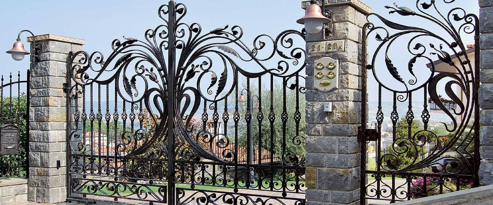
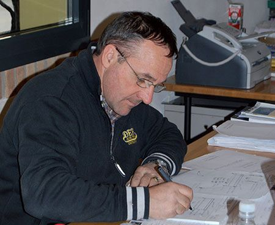
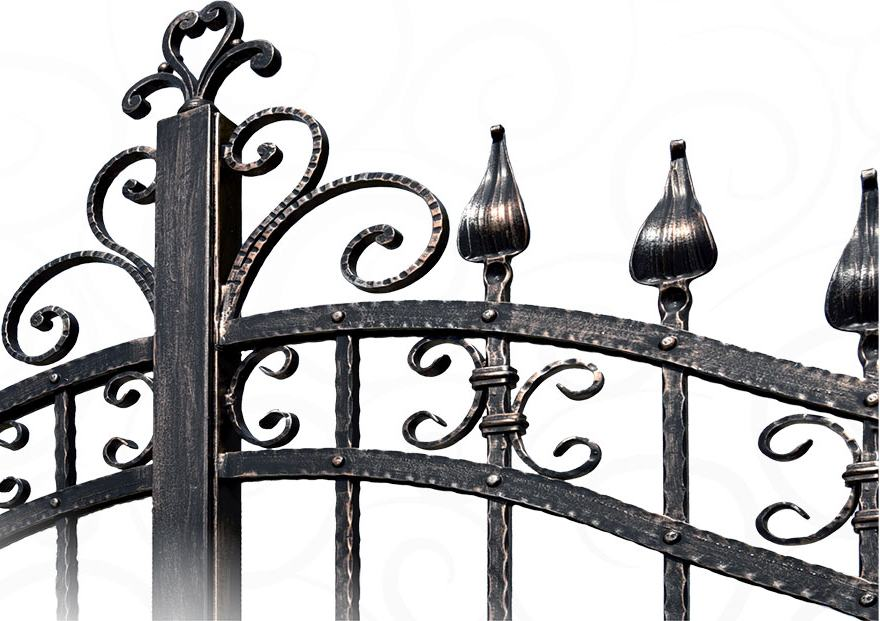
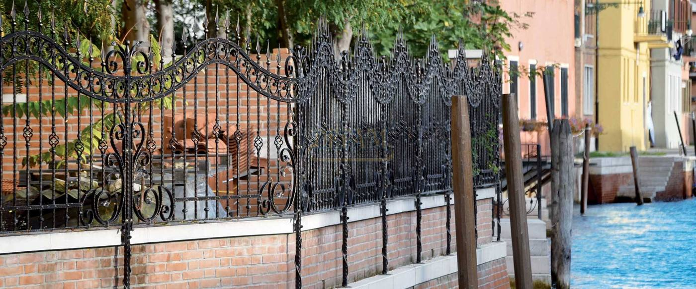
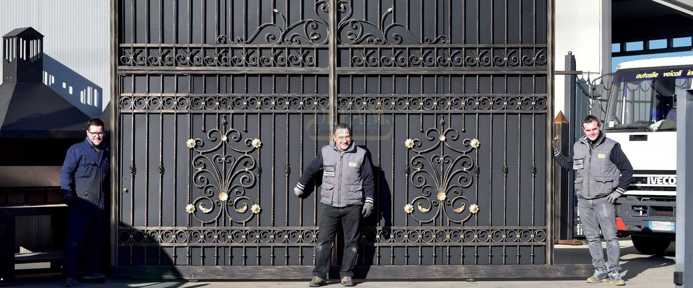

Cancelli e ringhiere in ferro, forgiati su misura dal 1977.
Progettiamo, costruiamo e montiamo cancelli, recinzioni, poggioli, inferriate e scale, classici o moderni, nella nostra officina di Castelfranco Veneto.
Veniamo da te senza impegno, prendiamo le misure e ti diciamo cosa si può fare.
- 1977l'anno in cui Mario De Faveri fonda DEFAM
- 3.000 m²tra officina, uffici e showroom a Castelfranco
- EN 1090-1strutture in acciaio certificate, marcatura CE
- 1.200+lavori fotografati nel nostro archivio
Più di 1.200 lavori fatti. Il prossimo è casa tua.
Scegli lo stile e il tipo. Ogni lavoro ha il suo codice: toccalo e chiedici un preventivo per quel modello, o per una versione disegnata sulle tue misure.
Stai guardando 8 dei 264 cancelli classici fotografati in archivio.
Non trovi quello che hai in mente? Lo disegniamo noi, partendo da uno schizzo, da una foto o da un modello da modificare.
Chiedi un progetto su misuraDieci finiture, dal Nero Forgia al Bianco Veneziano.
La verniciatura protegge il ferro e ne decide il carattere. Si parte da una base, Nera Forgia, Bianco Veneziano o Bianco Ghiaccio, e si aggiunge un tocco di metallo: oro, argento, rame o canna di fucile.
Qui vedi i campioni fotografati. Quelli veri li tocchi in showroom.
Nera Forgia Oro
Base Nera Forgia
Base Bianco Veneziano e Bianco Ghiaccio
Dal sopralluogo al collaudo, ti segue DEFAM.
Progettiamo, costruiamo, verniciamo e montiamo con il nostro personale. Una sola azienda a cui chiedere, dall'inizio alla fine.
-
Sopralluogo gratuito
Veniamo da te senza impegno: guardiamo il posto, prendiamo le misure e ti diciamo con franchezza cosa si può fare e cosa no.
-
Progetto su misura
Dal bozzetto al disegno definitivo. Si parte da un modello del catalogo o da un'idea tua, dalle forme più tradizionali a quelle più essenziali.

Mario De Faveri, fondatore, al tavolo da disegno. -
Costruzione in officina
Ogni pezzo nasce nei reparti della nostra officina di Castelfranco, unendo metodi antichi e tecniche nuove. Decori e lavorazioni speciali, dove servono.

-
Verniciatura
Scegli una delle dieci finiture: protegge il ferro nel tempo e dà al lavoro il suo carattere.
-
Montaggio e collaudo
Lo installa e lo collauda il nostro personale specializzato. Per i cancelli carrabili, automazioni garantite nel tempo con installatori professionisti. E le nostre lavorazioni sono garantite.

Recinzione RC060, montata.

Dal 1977, una famiglia che lavora il ferro.
Mario De Faveri ha fondato DEFAM nel 1977 e da allora mette in ogni lavoro l'esperienza e la passione per un mestiere antico. Oggi al suo fianco ci sono i figli Filippo e Giorgio, con una squadra di persone competenti.
Cancelli, recinzioni, ringhiere, parapetti, inferriate e complementi d'arredo nascono tutti nella nostra sede di Castelfranco Veneto: oltre 3.000 m² con l'officina divisa in reparti, gli uffici e un ampio showroom.
Lavoriamo per privati, imprese ed enti pubblici, con modelli di catalogo e pezzi su ordinazione, a un prezzo giusto per la qualità che offriamo.
- Certificazione
- EN 1090-1 con marcatura CE, certificato 1381-CPR-436
- Garanzia
- Sulle nostre lavorazioni
- Per chi
- Privati, imprese ed enti pubblici
Vieni a vedere il ferro dal vivo.
Nello showroom trovi materiali, stili e finiture da toccare con mano, e qualcuno che ti aiuta a scegliere la soluzione giusta per casa tua.
- Indirizzo
- Via della Cooperazione 19
31033 Castelfranco Veneto (TV) - Orari dello showroom
- Dal lunedì al venerdì
9:30–12:30 e 15:00–18:30 - Telefono
- 0423 723441
- info@defam.it
Ci trovi spesso anche in fiera: a Casa Moderna, a Udine, e all'Antica Fiera di Godega di Sant'Urbano.
Prenota il sopralluogo gratuito.
Dicci cosa ti serve e dove: ti richiamiamo per fissare l'appuntamento. Nessun impegno e nessun costo.
Preferisci parlarne a voce? Chiama lo 0423 723441, dal lunedì al venerdì.